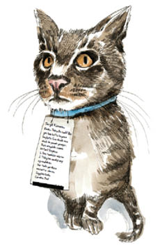

18
Bir cevap alamadan geçirdiğimiz beş günün ardından, bilinçaltı manipülasyonuna yönelik girişimimin başarısız olduğunu kabul ettim. Ancak o arada çok ilginç bir biçimde Tibby evde yemeye başlamıştı.
“A-ha!” dedim.
Wendy bile durumdan biraz hoşnut görünüyordu.
“Artık evde yiyor çünkü başka yerde verilen mamaların birdenbire arkası kesildi,” dedim. “Yani…”
Wendy, “Yani suçlunun o evlerden birinde olduğunu biliyoruz!” diye tamamladı cümlemi. Birbirimize sırıttık.
Nihayet biraz ilerleme kaydetmiştik.
Birkaç gün sonra, Wendy komşularla yüz yüze konuşma vaktinin geldiğini yeniden ileri sürdü. Kapıları çalarız, açan kişiye de lafı dolandırmadan Tibby’yi tanıyıp tanımadığını sorarız, diyordu.
Çift terapilerinde önerilen ses tonunu ve cömert bir gülümsemeyi ustalıkla kullanarak, “Ne demek istediğini anlıyorum,” dedim. “Ve sana da, bu konu hakkındaki düşüncelerine de saygı duyuyorum.”
Wendy de bana gülümsedi. Yutmamıştı. Benimki yalnızca iddianame öncesi göz boyamaydı.
İddianame: “Sorun şu. Burası büyük şehir. Kimse beklediği bir kargo yoksa kapısını açmaz.”
Şehir cengelinde çalan bir zilin ne anlama geldiğini açıklamaya giriştim.
1. Ellerinde gaz tenekeleriyle bir araba, boş bir benzin deposu ve vereceğiniz borcu geri ödeyeceklerine dair hikayeler anlatan sahtekarlar.
2. Yağlı saçlı çevrecilerden oluşan üç kişilik bir grup. Ellerinde broşürler ve kağıt altlıklarıyla, seni balinalara ve ağaçlara bağışta bulunman için suçlu hissettirmek üzere vaziyet almış olarak.
3. Haneye tecavüz tehlikesi.
Kısacası, kapının çalınması telefon numaranıza ya da e-posta adresinize sahip olmayan ya da Twitter hesabınızı bilmeyen birine işaret ediyordu. Onlarla ne diye konuşmak isteyecektiniz ki?

Wendy her zamanki gibi sabırla dinledi, sonra tek kaşını havaya kaldırdı.
“Komşularınla konuşmaktan çekiniyor musun?” diye sordu.
Alay ettiğimi ve hor gördüğümü belli etmek için soluğumu burnumdan verdim. “Çekinmek mi? Çekiniyor muymuşum? HAH!”
Wendy’nin kaşı gökyüzüne yakın kaldı.
Nümayişkar bir edayla, “Hayır, çekinmiyorum,” diye itiraz ettim. “Daha iyi bir planım var da ondan.”
Planım basit ve zarifti. Tibby kapı kapı gezecekti! Ne de olsa mahalleyi tanıyordu. Kimi ziyaret ettiğini gayet iyi biliyordu. Tasmasına bir not tutturacaktık. Notta, “Sevgili Komşum,” yazacaktı. “Bu kediye (benim kedim) mama veriyor musunuz? Veriyorsanız lütfen beni arayın, size teşekkür etmek istiyorum.”
Gururla, “Gördün mü, mamayla ilgileniyormuşum gibi numara yapıyorum,” dedim.
Wendy, “Çok zekice,” diye mırıldandı.
Notu şeffaf bantla kaplayıp kırmızı bir kurdeleyle Tibby’nin tasmasına bağladık. Arka kapıyı açtık ve kedinin salınarak uzaklaşmasını seyrettik.